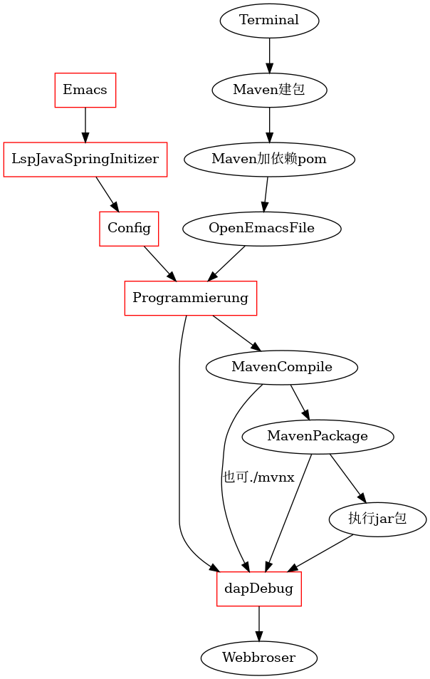

Webdesige
Table of Contents
- Factory mode
- project build digraph
- WordPress Web development in AWS
- Web Design Envirement in Emacs
- MySQL
- MongoDB
- fastdfs
- Nodejs newest install
- Yarn newest install
- JS
- ts
- npm
- nvm
- Vue
- Vue3
- Webpack
- JQuary
- AJAX
- Servlet
- Bootstrap
- Spring
- SpingMVC
- Spring Boot
- JDBC
- mybatis
- Shiro
- c3p0
- Rruid
- nginx
- apache2
- Maven
- Session und Cookie
- HTTP Proposal
- appeared Problem
- local jdk configuration
- Django
- RuoYi-Vue project
- webpack
- serve
- VScode
- Problem
Factory mode
one product one factory many many design
一个产品，在一个工厂里有多个设计实现
one product many factory many design
一个产品，在多个各自的工厂里，有自己特有的设计实现
many product many factory many design
对于多个产品，在多个各自的工厂里，有自己特有的对每个产品的设计实现
project build digraph

1 add the to the above SRC begin: dot :file ../sysconf/foto/webbuild.png 2 delete the output : [[file:../sysconf/foto/webbuild.png]] 3 push the sysc repository, because the foto is located in it 4 add the link from sysc repository https://github.com/scofild429/sysc/blob/master/foto/webbuild.png
WordPress Web development in AWS
构建后台
没事不要执行该代码
cd ~/Documents/web/key_aws ssh ubuntu@3.124.205.43 -i pass1aws.pem sudo apt update -y sudo apt upgrade -y sudo apt install apache2 sudo systemctl status apache2 sudo systemctl enable apache2 sudo apt install mariadb-server mariadb-client sudo systemctl start mariadb sudo systemctl status mariadb sudo mysql_secure_installation ... sudo systemctl restart mariadb sudo apt install php php-mysql php-gd php-cli php-common sudo apt install wget unzip sudo wget https://wordpress.org/latest.zip sudo unzip latest.zip sudo cp -r wordpress/* /var/www/html/ cd /var/www/html/ sudo chown www-data:www-data -R /var/www/html/ sudo rm index.html ## Now go to the IP webseit, when need database, do so sudo mysql -u root -p Enter ## create database wordpress; create database wordpress; create user "wpadmin"@"%" identified by "wpadminpw"; grant all privileges on wordpress.* to "wpadmin"@"%"; exit;
back to the IP webseit, pass the database , username and password, set username and password for wordpress, 到此，可以用IP 地址访问前端和后台了
解析域名
route53, 用域名创建NS A-IPV4,名称为空， 值为IP CNAME，名称www, 值为域名 再将A 和CNAME 放到namecheap的域名的DNS管理中
ssl
sudo a2enmod ssl sudo systemctl restart apache2 cd ~ wget https://dl.eff.org/certbot-auto chmod a+x certbot-auto sudo ./certbot-auto --apache....
go to https://www.sslshopper.com/ssl-checker.html and check you domina
scp
transfer file to linux instance of CE2
scp -i pass1aws.pem init.el ubuntu@3.124.205.43:.emacs.d
external html
- 将文件传到部署根目录
- 复制文件xxx.html 为page-xxx.php到应用主题根目录
- 创建页面，先只写标题，保存后改别名，slug 为xxx
- 发布后，将页面设为菜单就能访问
Web Design Envirement in Emacs
lsp-mode
lsp-java
dap-mode
Spring Boot
Emacs : M-x lsp-java-springboot-generate after build the project, it can be compiled by Maven,and run
project build digraph
digraph diagramm {
Emacs [shape=box,color=red]
LspJavaSpringInitizer [shape=box,color=red]
Config [shape=box,color=red]
dapDebug [shape=box,color=red]
Programmierung [shape=box,color=red]
Terminal -> Maven建包;
Maven建包 -> Maven加依赖pom;
Maven加依赖pom -> OpenEmacsFile;
OpenEmacsFile -> Programmierung;
Programmierung -> MavenCompile;
MavenCompile -> MavenPackage;
MavenCompile -> dapDebug[label = "也可./mvnx"];
MavenPackage -> 执行jar包;
MavenPackage -> dapDebug;
执行jar包 -> dapDebug;
Emacs -> LspJavaSpringInitizer;
LspJavaSpringInitizer -> Config;
Config -> Programmierung;
Programmierung -> dapDebug;
dapDebug -> Webbroser;
}
1 add the to the above SRC begin: dot :file ../sysconf/foto/webbuild.png 2 delete the output : [[file:../sysconf/foto/webbuild.png]] 3 push the sysc repository, because the foto is located in it 4 add the link from sysc repository https://github.com/scofild429/sysc/blob/master/foto/webbuild.png
{kind=link}
appeared Problem
server is not startup
1, workspace 有重叠和包含， 2, 需要重启 lsp mode
can't find the main class to start project
mvn compile 出现问题，大多数时候是依赖的问题
没有对应的补全
mvn 依赖的version 不同会有不同的包，补全也不同
MySQL
事务隔离
1 可同时访问修改 脏读 2 隔离访问 不可重返读 3 单人访问 幻读
single java file connect to mysql
1.download the driver to a current to java file
official web, and in my case
mysql-connector-java-8.0.20.jar
2.add the current path to the CLASSPATH
export CLASSPATH=mysql-connector-java-8.0.20.jar:.
3.compile and connect
execute as a jar file
if I want to package them to a package to a jar starkoverflow hitting and this plugin to pom.xml
<build> <plugins> <plugin> <artifactId>maven-assembly-plugin</artifactId> <configuration> <archive> <manifest> <mainClass>fully.qualified.MainClass</mainClass> </manifest> </archive> <descriptorRefs> <descriptorRef>jar-with-dependencies</descriptorRef> </descriptorRefs> </configuration> </plugin> </plugins> </build>
and run with : mvn clean compile assembly:single
and then mvn package
can be called by jar file
java -cp target/xxxx….xx.jar com.mycompany.app.App
springboot
just call the plugins at the start
事务 Transaction
声明式：Annoation 1, 配置事务管理器 2, 开启事务注解 3, 添加事务注解 @Transaction(propagation, isolation, timeout, readout, (no)rollback) propagation;事务是否传播 isolation: 脏读：未提交的事务读取到另一个未提交的事务的原始数据 不可重复读；未提交的事务读取到另一个提交的事务的原始数据 幻读；未提交的事务读取到另一个提交的事务的修改数据
范式
| 原子性 | 一致性 | 隔离性 | 持久性 |
连接池
外键
多表
execute in emacs
- create mvn project
- find the plugin of mysql and add it to pom.xml
- programmierung
- the connection can be call in the dabug of emacs
M-x :dap-debug
MongoDB
install
go to official seit and stetp by step
| commonds | functions |
|---|---|
| or | $inc |
| in | $mul |
| exist | $rename |
| gl | $set |
| sort | $unset |
| limit | |
| skip | |
| x | |
| ^x | |
| upsert | |
| rename | |
| getIndexs | |
| createIndex | |
| dropIndex | |
sudo systemctl start mongod
create database, collections, and drops
:admin at the first step, we must login into one database
show dbs;
use xiaoma;
db.createCollection("posts");
show collections;
db.posts.drop();
db.dropDatabase();
create database, collections, and documents
use xiaoma; db.createCollection("posts"); show collections; db.posts.insert({ title: "my first blog", content: "can be start" }); db.posts.insert({ title: "my second blog", content: "can be start now", tag: ["unknow type"] }); for(var i = 3;i<=10;i++){ db.posts.insert( {title :"this is my "+i+"th blog"}); }; db.posts.find(); db.posts.count(); db.posts.remove({}); db.posts.drop(); db.dropDatabase();
backup and restore
mongo xiaoma : can just get in xiaoma database
01, create documents
use xiaoma; db.createCollection("posts"); show collections; db.posts.insert({ title: "my first blog", content: "can be start" }); db.posts.insert({ title: "my second blog", content: "can be start now", tag: ["unknow type"] }); for(var i = 3;i<=10;i++){ db.posts.insert( {title :"this is my "+i+"th blog"}); }; db.posts.find(); db.posts.count();
02, dump
cd ~/Desktop/ mkdir mongobk cd mongobk mongodump -d xiaoma
03, delete documents
use xiaoma;
db.posts.remove({});
db.posts.find();
exit;
04, restore
cd ~/Desktop/mongobk
mongorestore --drop
05, check
use xiaoma; db.posts.find(); db.posts.drop(); db.dropDatabase();
fastdfs
libfastcommon & fastdfs
install
sudo ./make.sh install 查看tracker和storage的执行脚本，安装后必须存在 ll etc/init.d | grep fdfs
create location of tracker and stoarge
mkdir ~/Dokumente/WebDev/fastdfs/client mkdir ~/Dokumente/WebDev/fastdfs/tracker mkdir ~/Dokumente/WebDev/fastdfs/storage
copy config
sudo cp /etc/fdfs/client.conf.sample /etc/fdfs/client.conf sudo cp /etc/fdfs/tracker.conf.sample /etc/fdfs/tracker.conf sudo cp etc/fdfs/storage.conf.sample /etc/fdfs/storage.conf sudo cp //etc/fdfs/storageids.conf.sample //etc/fdfs/storageids.conf
config tracker stoarge client
cd /etc/fdfs copy all config file as modification file
tracker: 修改basepath 为新建的tracker目录full name
storage: basepath 为新建的storage目录full name storepath 为新建的storage目录fullname tracker-server:内网加tracker的端口
client: basepath: 为新建的client目录full tracker-server:内网加tracker的端口
open port
open port sudo firewall-cmd –add-port=80/tcp –permanent sudo firewall-cmd –add-port=23000/tcp –permanent sudo firewall-cmd –add-port=22122/tcp –permanent restart firewall: sudo firewall-cmd –reload
start and test
sudo /usr/bin/fdfstrackerd /etc/fdfs/tracker.conf start sudo /usr/bin/fdfsstoraged /etc/fdfs/storage.conf start sudo /usr/bin/fdfstest /etc/fdfs/client.conf upload /etc/fdfs/110.png
Or
this can be don't work for Unit fdfsstoraged.service not found sudo service fdfstrackerd start sudo service fdfstrackerd start
/usr/bin/fdfsuploadfile /etc/fdfs/client.conf ~/Bilder/110.png
fastdfs-nginx-mode
将config中的 ngxmoduleincs="/usr/local/include" and COREINCS= ="$COREINCS /usr/local/include" 改为： ngxmoduleincs="/usr/include/fastdfs /usr/include/fastcommon" COREINCS= ="$COREINCS /ur/include/fastdfs /usr/include/fastcommon"
再将config同目录下的modfastdfs.conf 复制到/etc/fdfs/中 and modify:
- trackerserver just like in storage.conf
- urlhavegroupname = true
- storepath0 just like in storge.conf
最后将fastdfs中conf中的http.conf和mime.types复制的/etc/fdfs/
nginx with fdfs
apt-get install libpcre3 libpcre3-dev apt-get install libpcre3 zlib1g apt-get install libpcre3 zlib1g-dev ./configure –prefix=/opt/nginx –sbin-path=/usr/bin/nginx –add-module=../fastdfs-nginx-module-1.20/src make sudo make install
location ~/group([0-9]){ ngxfastdfsmodule; }
cd usr/bin ./nginx
OR: sudo /usr/bin/nginx -s reload
IDEA config
#fastdfs设置 fdfs: so-timeout: 2500 # 读取时间 connect-timeout: 5000 # 连接超时时间 thumb-image: # 缩略图 width: 100 height: 100 tracker-list: # tracker服务配置地址列表 - localhost:22122 upload: base-url: localhost/ allow-types: - image/jpeg - image/png - image/bmp
Nodejs newest install
current releast
sudo apt-get install curl curl -sL https://deb.nodesource.com/setup_16.x | sudo -E bash -
LTS release
sudo apt-get install curl curl -sL https://deb.nodesource.com/setup_14.x | sudo -E bash -
install and upgrade
sudo apt-get install nodejs sudo npm install -g install
Yarn newest install
yarn can be installed by npm, and yarn –version works, but only for old old version
for yarn init comes the error: “00h00m00s 0/0: : ERROR: [Errno 2] No such file or directory: 'init'”
delete yarn and reinstall it
sudo apt remove cmdtest sudo apt remove yarn curl -sS https://dl.yarnpkg.com/debian/pubkey.gpg | sudo apt-key add - echo "deb https://dl.yarnpkg.com/debian/ stable main" | sudo tee /etc/apt/sources.list.d/yarn.list sudo apt update sudo apt upgrade
for upgrade comes the error:
ModuleNotFoundError: No module named 'uaclient' dpkg: Fehler beim Bearbeiten des Paketes ubuntu-advantage-tools (--configure): »installiertes ubuntu-advantage-tools-Skript des Paketes post-installation«-Unterprozess gab den Fehlerwert 1 zurück Fehler traten auf beim Bearbeiten von: ubuntu-advantage-tools E: Sub-process /usr/bin/dpkg returned an error code (1)
Normally in one package is not complete in dpkg or apt,
sudo dpkg --configure -a
or
sudo apt install -f sudo apt install--fix-broken
works, but if not, remove it if possible so ubuntu-advantage-tools should be removed,
sudo apt-get remove ubuntu-advantage-tools sudo mv /var/lib/dpkg/info/ubuntu-advantage-tools.* /tmp/ sudo dpkg --force-remove-reinstreq --purge ubuntu-advantage-tools sudo dpkg --remove --force-remove-reinstreq ubuntu-advantage-tools
then
sudo apt update sudo apt upgrade sudo apt install yarn yarn --version
new version can be shown, and yarn init works
JS
some ES6 has to be connected JS to here,
ts
after change the tsconfig.json, use the command to compile ts to js continual.
tsc -watch
npm
npm build sudo npm i -g serve serve -s dist sudo npm i json-server
list all installed packages npm list -g –depth=0 npm uninstall reveal.js
nvm
curl -o- https://raw.githubusercontent.com/nvm-sh/nvm/v0.39.0/install.sh | bash nvm ls-remote nvm install node (the least version) nvm ls nvm install v16.13.1 nvm ls nvm install v17.2.0 nvm ls
Vue
数据绑定
- 计算属性 在computed属性对象中定义计算属性的方法 在页面中使用{{方法名}}来显示计算的结果
- 监视属性: 通过通过vm对象的$watch()或watch配置来监视指定的属性 当属性变化时, 回调函数自动调用, 在函数内部进行计算
计算属性高级: 通过getter/setter实现对属性数据的显示和监视 计算属性存在缓存, 多次读取只执行一次getter计算
const app = Vue.createApp({ data() { return { count: 4 } } }) const vm = app.mount('#app') console.log(vm.$data.count) // => 4 console.log(vm.count) // => 4 // 修改 vm.count 的值也会更新 $data.count vm.count = 5 console.log(vm.$data.count) // => 5 // 反之亦然 vm.$data.count = 6 console.log(vm.count) // => 6
npm
npm install 将会执行package.json 的设定， 在IDAE里可以选中package.json 里的 build:prod字段，run
操作
vd 是vue里的data属性
vm 是vue里的mothods方法
ht 是html里的标签
| {{vd}} | 占位 | |
| v-text="vd" | 替换 | |
| v-html="vd" | 替换并渲染 | |
| v-bind:ht="vd" | :ht="vd" 设置属性 | 可用3元表达式或者数据的元素对象指定 |
| v-on:ht="vm" | @ht="vm" | on methode(可自定义) |
| v-mode="vd" | 只在表单中暴露vd,并操作 | |
| v-for="(item,index) in "vd"" | vd时vue中可迭代元素或在对象 | |
| v-for="i in 10" | 1,,,,,9 | |
| push | 后加 | |
| unshift | 前加 | |
| v-if | 删除不显示的元素 | |
| v-show | display 不显示的元素 | |
生命周期
| beforeCreate | 加载vue系统构造，但是可以接触到Dom元素 |
| created | 加载自定义的data,mothods, filter….. |
| beforeMounte | 创建特性在内存 |
| mounted | 加载特性，渲染页面 |
| beforeupdate | 更改特性 |
| updated | 渲染更改的特性 |
| beforedestroy | 准备清除特性 |
| destroy | |
component
1, 用extends编写template 2, 在component中编写template 3, 在vue 外部，script模块中编写template 4, 在vue的组件中使用变量和方法，必须在组件中用函数定义，
Mustache
{{item }} item von el can be here
v-bind
v-bind: kann verbunden werden mit id, href, key, für characters von DOM elements
multi class 动态绑定v-band
- 三目运算指定class
- 集合，可删除class，不可增加,不会被拦截
- 数组，可加可减
multi style 动态绑定v-band
- 三目运算指定style
- 集合，可删除style，不可增加， 不会被拦截
- 数组，可加可减
v-show
if v-show is false, the DOM element is already included, but will not be presented.
v-if
if v-if is false, the DOM element will be deleted
Vue3
Webpack
npm init -y npm i -D webpack webpack-cli typescript ts-loader 设定生成的html的特性，包括使用模板 npm i -D html-webpack-plugin 设定项目的运行服务器 npm i -D webpack-dev-server in package.json/"scripts": "start": "webpack serve --open chromium-browser" and then in terminal: npm start 删除上次的生成文件，整个dist目录 npm i -D clean-webpack-plugin
const path = require("path"); const HTMLWebpackPlugin = require("html-webpack-plugin"); const { CleanWebpackPlugin } = require("clean-webpack-plugin"); module.exports = { entry: "./src/index.ts", output: { path: path.resolve(__dirname, "dist"), filename: "bundle.js", // environment: { // arrowFunction: false, // }, }, module: { rules: [ { test: /\.ts$/, use: [ { loader: "babel-loader", options: { presets: [ [ "@babel/preset-env", { targets: { chrome: "87", // ie: "11", }, corejs: "3", useBuiltIns: "usage", }, ], ], }, }, "ts-loader", ], exclude: /node-modules/, }, ], }, plugins: [ new HTMLWebpackPlugin({ title: "APP For Webpack", }), new CleanWebpackPlugin(), ], //模块设定 resolve: { extensions: [".ts", ".js"], }, };
webpack: Permission denied sudo chmod 777 ./node_modules/.bin/webpack
JQuary
select element
JQuery选择器
| elements chooser | class chooser | id chooser | name |
| $("p"), $("div"), $("h2") | $(".test") | $("#test") | $("[name=name]") |
CSS 选择器
| elements chooser | class chooser | id chooser |
| p, div, h2 | .test | #test |
JQuery思想 方法函数化 方法链式化， 取值赋值一体化
$(function(){ $("h1").click(function(){ alert("nihao"); }); $("h1").mouseout(function(){ this.style.backgroundColor = "red"; }); $("h1").mouseover(function(){ this.style.backgroundColor = "blue"; }); }); $(function(){ $("h1").click(function(){ alert("nihao"); }).mouseout(function(){ this.style.backgroundColor = "red"; }).mouseover(function(){ this.style.backgroundColor = "blue"; }); }); $("div").html() $("input").val()
function
filter
not
has
prev
next
find
eq
index
attr
addClass
removeClass
on
off
width
width innerWidth outerWidth
scrollTop
operation function
| toggle | fade | slide | animate | stop | clain |
| text | html | val | attr | append | prepend |
| after | before | remove | empty | addclass | removeclass |
| css | width | height | perent | childen | siblings |
| load | get | post | noConflict |
AJAX
Servlet
Bootstrap
Spring
sammelung:
| Component | inject the class into Spring from current file as bean |
| ComponentScan | load the bean into current file from Spring as class |
| Autowired | complete all beans dependence with the beans in spring |
| Configuration | configuration class |
模式： 单例和多例：生命周期：创建和销毁时间
Annotation mehthod
@Component
将所修饰的类做成bean，由 Spring 来管理 为了减少耦合，建立一个配置类来管理全部的bean 由 @Configuation and @ComponentScan 创建的配置类来管理。 注意Spring只是默认管理@ComponentScan所在的其以下的区域， 除非指定包名，可以到其上一级的包路径
web hierarchy with @component
Controller layer use @Controller than @Component Service layer use @Service than @Component Dao layer use @Repository than @Component
autowired
- Set注入 利用set方法
- cost注入 利用构造方法，可和set 注入混用
- 普通成员变量
- 普通成员函数
interface with @Autowired
| 注入 | @Compenten | 加在实现类 |
| 装配 | @Autowired | 放在该接口的类型前 |
| 产生歧义 | 多个Autowired | 如果该接口有多个实现类，不知道用那个实现类的bean |
| 首选bean | @Primary | 多个实现类的Compenten注入时，可制定唯一一个实现类为首 |
| 限定附 | @Qualifier("xxx") | 在Autowired时，使用一样的 @Qualifier("xxx") |
| bean id | @Compenten("xxx") | 同样在Autowired时，使用一样的 @Qualifier("xxx") |
| 默认bean id | xxx即为类名 | 在Autowired时 @Qualifier("xxx")时，类名首字母小写即可 |
| 二合一 | @Resource(name="小写类名") | 代替Autowired 和Qulifier() |
xml mehthod
New-> XML Configuration File -> Spring Config default name: ApplicationContext.xml
<bean class="xxx.xxx.xxx.class" id="" (gleich wie name="") 别名可以多个，隔开即可 <consturctor-arg ref="beanid"> für contributor bean <consturctor-arg name="xxx" value="yyy"> für contributor string c:contributor C名称空间 <list> <map> <set> <p> <util> <properties> … ><bean>
bean method
Don't use @Component or Service Controller Repository to inject bean(IOC) with a config class @Configuation Use @bean on it's consturctor function to inject bean. 对其多实现类的歧义性处理，和自动装配一样，@Primary @Qualifer and BEANID
seter
passing the contributor bean can use setter function
consturctor
if a bean need another bean as contributor, the contributor can be passed as argument into consturctor function, or generated
advancd mehthod
function field
| singleton | default only one bean |
| prototype | scope="prototype" |
| Session | each inject |
| request | |
lazy load bean
in xml: lazy-init="true" in Annotation: @Lazy with prototype, singleton is default as lazy
init and destroy
log4j
after injuct in pox.xml, create log4j.properties in project resources fold
log4j.rootCategory=INFO, stdout
log4j.appender.stdout=org.apache.log4j.ConsoleAppender
log4j.appender.stdout.layout=org.apache.log4j.PatternLayout
log4j.appender.stdout.layout.ConversionPattern=%d{ABSOLUTE} %5p %t %c{2}:%L - %m%n
log4j.category.org.springframework.beans.factory=DEBUG
Test
| @RunWith |
| @ContextConfiguration |
AOP
动态代理，(JDK，接口) (CGLib, 接口)
前置，后置，环绕 class 1 -> Bean 1 Bean 1 + pointcut(expression,within,args) + class 2 -> Bean 2
Concept
连接点：可增强的方法 切入点: 实际上被增强的方法 通知（增强）：增强的内容
- 前置 Before
- 后置 After 增强之后，return 之前，有异常也执行
- 环绕 Around
- 异常 AfterThrowing 有异常才执行
- 最终 AterRreturning return 之后才执行，有异常不执行
切面：将增强内容应用到切入点
AspectJ
- xml
- Annotation
切入点表达式 @Pointcut @Oder()
JDBC
JDBC Template update(sql, args) 增删改 queryForObject()查 query() bachtupdate()
SpingMVC
Web action –> 前端控制 –> Path –> 后端 –> handler –> 前端 backend reserver arguments.
- single argument
- multi arguments
- class instance
| C -> C | redirect | 重定向 | 刷新后会重复提交增删改 |
| C -> V | forward | 转发 | 查询需要转发 |
-Dfile.encoding=utf-8 for Tomcat server VM Options: backend output for chineseisch
C-> V assugment request session model
Spring Boot
JDBC
- Driver
- connection
- mysql
- execute
- statement
- preperedstatement
- close
mybatis
framework
springboot
- pom.xml
<dependency> <groupId>com.baomidou</groupId> <artifactId>mybatis-plus-boot-starter</artifactId> <version>3.3.0</version> </dependency>
- application.yml
配置mybatis, 指示Mapper.xml的位置 mapper-locations: classpath:mapper/*/*Mapper.xml
- Applicaton.java
启动类, 指示bean扫描的位置 @MapperScan(basePackages = {"com.sxt.system.mapper"})
- Route
web requirement -> controller -> server -> serverIpm -> *Mapper.xml(self def) 自定义的在*Mapper.xml内找到数据库的入口， 默认的可以直接调用。
spring
# and $
- # will add ’ ’ around the given paramenters, so it's saft, with concat
- $ will not add ’ ’, it's not safe
include
<sql id="commonField" id, goodname, price </sql>
Select <include refid="commonField" />
流程
- 获取字节输入流
- 构建SqlSessioFactory
- 生产SqlSession
- 执行Dao
- 释放资源
延迟加载
缓存
一级缓存
SqlSession
二级缓存
SqlSessionFactory
注解开发
Shiro
c3p0
Rruid
nginx
local Nginx deployment
install
yum install -y pcre pcre-devel yum install -y zlib zlib-devel yum install -y openssl openssl-devel tar mv xxx nginx mv nginx /usr/local/src/ cd /usr/local/src/nginx mkdir /usr/nginx ./configure --prefix=/usr/nginx make make install
sudo apt install nginx
etc/nginx 是其配置文件夹，里面有很多include文件， nginx 的默认设置在其中一个 default 文件里。 本机html仓库 /var/www/html 将项目放在此文件夹下，运行对于的端口即可 本机开机后,该文件的会被自动部署,端口可见
fire wall 80 port if necessary
add port : sudo apt install firewalld sudo firewall-cmd --add-port=80/tcp --permanent sudo firewall-cmd --remove-port=80/tcp --permanent restart firewall: sudo firewall-cmd --reload check port: sudo firewall-cmd --list-all
nginx control
sudo apt systemctl stop nginx nginx -s stop sudo apt systemctl start nginx nginx -s reload
uninstall
sudo apt-get purge nginx nginx-common
Nginx with php
sudo apt install nginx sudo systemctl restart nginx sudo apt install php sudo apt install php-fpm check if exit: /var/run/php/php7.2-fpm.sock
emacs /etc/php/7.2/fpm/pool.d/www.conf -> listen = /run/php/php7.2-fpm.sock
cd /etc/nginx/sites-available emacs default
list post
root folder
location ~ \.php${
include snippets/fastcgi-php.conf;
fastcgi_pass unix:/var/run/php/php7.2-fpm.sock;
include fastcgi_params;
}
vollstandig
################### 9020 FOR php ##################################################################################
server {
listen 9020;
listen [::]:9020;
# SSL configuration
#
# listen 443 ssl default_server;
# listen [::]:443 ssl default_server;
#
# Note: You should disable gzip for SSL traffic.
# See: https://bugs.debian.org/773332
#
# Read up on ssl_ciphers to ensure a secure configuration.
# See: https://bugs.debian.org/765782
#
# Self signed certs generated by the ssl-cert package
# Don't use them in a production server!
#
# include snippets/snakeoil.conf;
root /home/sx/Documents/nginx9020;
# Add index.php to the list if you are using PHP
index index.html index.htm index.nginx-debian.html index.php;
server_name _;
location / {
# First attempt to serve request as file, then
# as directory, then fall back to displaying a 404.
try_files $uri $uri/ =404;
}
# pass PHP scripts to FastCGI server
#
location ~ \.php$ {
include snippets/fastcgi-php.conf;
# With php-fpm (or other unix sockets):
fastcgi_pass unix:/var/run/php/php7.2-fpm.sock;
# With php-cgi (or other tcp sockets):
include fastcgi_params;
#fastcgi_pass 127.0.0.1:9000;
}
# deny access to .htaccess files, if Apache's document root
# concurs with nginx's one
#
#location ~ /\.ht {
# deny all;
#}
}
apache2
sudo apt install apache2 sudo systemctl restart apache2 cd etc/apache2
- ports.conf -> add new post
- appache.conf -> add new folder
- cd sites-available emacs 000-default.conf -> add server of post and folder
Maven
package all the dependencies together as a jar
if I want to package them to a package to a jar starkoverflow hitting and this plugin to pom.xml
<build> <plugins> <plugin> <artifactId>maven-assembly-plugin</artifactId> <configuration> <archive> <manifest> <mainClass>fully.qualified.MainClass</mainClass> </manifest> </archive> <descriptorRefs> <descriptorRef>jar-with-dependencies</descriptorRef> </descriptorRefs> </configuration> </plugin> </plugins> </build>
package and Execute
- run with : mvn clean compile assembly:single
- mvn package
and now this jar file can be called
- java -cp target/xxxx….xx.jar com.mycompany.app.App
customize locally archetype
to the local repository
cd ~/.m2/repository/org/apache/maven/archetypes/maven-archetype-quickstart/1.4/
open the jar file, and change the pom.xml
Session und Cookie
- Browser send request to server with name, password…
- if the authentication is passed, server generate a SessionID,
and search the results, giving back browser response(name, password, results Sessionid..) Sessionid will be saved in SERVER.
- get the response, browser save the name, password and Sessionid as
Cookie.
- send request again, browser get the name, password, and Sessionid from Cookie, and send the requests
- server check the Sessionid only if possible, and send the results and name, password again as response back to browser.
Only the first time response, Sessionid will be send back to browser.
HTTP Proposal
http Request
| Request Line | request type + url path(many kinds of paramenters)+ http version |
| Header: | Host; Cookie; Content-type; User-Agent… |
| Request Body: | username="admin"&password="admin" |
Http Response
| esponse Line: | http version + state code + state string |
| Header: | Content-type (describe information) |
| Response Body: | <html> ….</tml> |
appeared Problem
server is not startup
1, workspace 有重叠和包含， 2, 需要重启 lsp mode
can't find the main class to start project
mvn compile 出现问题，大多数时候是依赖的问题
没有对应的补全
mvn 依赖的version 不同会有不同的包，补全也不同
local jdk configuration
mkdir /usr/local/java tar -zxvf jdkxxxxx.tar.gz -C /usr/localjava sudo emacs -nw -q /etc/profile -> JAVA_HOME=/usr/local/java/jdkxxxxx PATH=$JAVA_HOME/bin:$PATH CLASSPATH=.:$JAVA_HOME/lib/dt.jar:$JAVA_HOME/lib/tools.jar export JAVA_HOME export PATH export CLASSPATH source /etc/profile
Django
$ uwsgi –chdir /home/cloud/django/QL –http :8000 –module QL.wsgi:application $ uwsgi –ini microdomainsuwsgi.ini
RuoYi-Vue project
backup deployment
redis
sudo apt install redis-server sudo snap install redis-desktop-manager(not necessary) sem /etc/redis/redis.conf 56 bind 127.0.0.1 507 requirepass 123456 sudo systemctl restart redis-server or sudo service redis-server restart 1. without password : redis-cli 2. with password : redis-cli -h localhost -p 6379 -a 123456 PING -> PONG It may happen, even with requirepass, but still can login without pass. The application based on this will be fail, Need redis-cli login, and > auth "pass" if returns OK, it works for Applications
mysql
tomcat
configuration for IDEA as local Tomcat
schnitt
redis mysql uploadPath system log.path check localhost:8080
ssh
set to be false
dependence from jdk8
<dependency> <groupId>javax.xml.bind</groupId> <artifactId>jaxb-api</artifactId> <version>2.3.0</version> </dependency> <dependency> <groupId>com.sun.xml.bind</groupId> <artifactId>jaxb-impl</artifactId> <version>2.3.0</version> </dependency> <dependency> <groupId>com.sun.xml.bind</groupId> <artifactId>jaxb-core</artifactId> <version>2.3.0</version> </dependency> <dependency> <groupId>javax.activation</groupId> <artifactId>activation</artifactId> <version>1.1.1</version> </dependency>
frontend deployment
build
cd ruoyi-ui npm run build:prod npm run build:stage cp -r dist/* ~/Documens/nginx9010/
验证码 for nginx
#####################9010 NOT for php ############################################################################
server {
listen 9010;
listen [::]:9010;
# SSL configuration
#
# listen 443 ssl default_server;
# listen [::]:443 ssl default_server;
#
# Note: You should disable gzip for SSL traffic.
# See: https://bugs.debian.org/773332
#
# Read up on ssl_ciphers to ensure a secure configuration.
# See: https://bugs.debian.org/765782
#
# Self signed certs generated by the ssl-cert package
# Don't use them in a production server!
#
# include snippets/snakeoil.conf;
# Add index.php to the list if you are using PHP
server_name _;
location / {
# First attempt to serve request as file, then
# as directory, then fall back to displaying a 404.
root /home/sx/Documents/nginx9010;
index index.html index.htm index.nginx-debian.html index.php;
try_files $uri $uri/ =404;
}
# deny access to .htaccess files, if Apache's document root
# concurs with nginx's one
#
#location ~ /\.ht {
# deny all;
#}
location /prod-api/{
proxy_set_header Host $http_host;
proxy_set_header X-Real-IP $remote_addr;
proxy_set_header REMOTE-HOST $remote_addr;
proxy_set_header X-Forwarded-For $proxy_add_x_forwarded_for;
proxy_pass http://localhost:8080/;
}
error_page 500 502 503 504 /50x.html;
location = /50x.html {
root html;
}
}
webpack
npm init -y npm i -D webpack webpack-cli typescript ts-loader 设定生成的html的特性，包括使用模板 npm i -D html-webpack-plugin 设定项目的运行服务器 npm i -D webpack-dev-server in package.json/"scripts": "start": "webpack serve --open chromium-browser" and then in terminal: npm start 删除上次的生成文件，整个dist目录 npm i -D clean-webpack-plugin
const path = require("path"); const HTMLWebpackPlugin = require("html-webpack-plugin"); const { CleanWebpackPlugin } = require("clean-webpack-plugin"); module.exports = { entry: "./src/index.ts", output: { path: path.resolve(__dirname, "dist"), filename: "bundle.js", // environment: { // arrowFunction: false, // }, }, module: { rules: [ { test: /\.ts$/, use: [ { loader: "babel-loader", options: { presets: [ [ "@babel/preset-env", { targets: { chrome: "87", // ie: "11", }, corejs: "3", useBuiltIns: "usage", }, ], ], }, }, "ts-loader", ], exclude: /node-modules/, }, ], }, plugins: [ new HTMLWebpackPlugin({ title: "APP For Webpack", }), new CleanWebpackPlugin(), ], //模块设定 resolve: { extensions: [".ts", ".js"], }, };
serve
sudo apt install serve serve folder
VScode
set the fontsize
settings: editor . fontsize:15 windows .zoomLevel: 1.5
Zen mode
hiden all stuff, only show code
Minmap
minmap of all code
switch in opened file
ctrl + tab
Emmet
"emmet.triggerExpansionOnTab": true
Quokka
M-x: new quokka js file will execute all in the new file
Better comments
open it in format on save
live server
M-x live server open file
Problem
maximun file number
System limit for number of file watchers reached, watch '/home/silin/Dokumente/WebDev/Vue/vueboot5/node_modules/webpack-dev-server/client/live.html'
Overstack description the Project need more file than the system can watch,
Ubuntu sudo gedit /etc/sysctl.conf Add a line at the bottom fs.inotify.max_user_watches=524288 Then save and exit! sudo sysctl -p to check it Then it is solved!
Mix of Tab and space
// .eslintrc.js module.exports = { "rules": { "no-mixed-spaces-and-tabs": 0, // disable rule } };
Unexpected tab character (no-tabs)
// .eslintrc.js module.exports = { "rules": { "no-tabs": 0 } };
Parsing error: Unexpected token <
// .eslintrc.js module.exports = { "root": true, "env": { "node": true }, "extends": [ "plugin:vue/essential", "eslint:recommended" ], "rules": { "no-mixed-spaces-and-tabs": 0, // disable rule }, "parserOptions": { "ecmaVersion": 6, "ecmaFeatures": { "experimentalObjectRestSpread": true }, "parser": "babel-eslint" } };
Expected indentation of 8 spaces but found 1 tab (indent)
rules: { 'indent': 'off' }
error:0308010C:digital envelope routines::unsupported
$: export NODEOPTIONS=–openssl-legacy-provider
scp to var/www/html permission dense
change the owner and group of html to be non root,